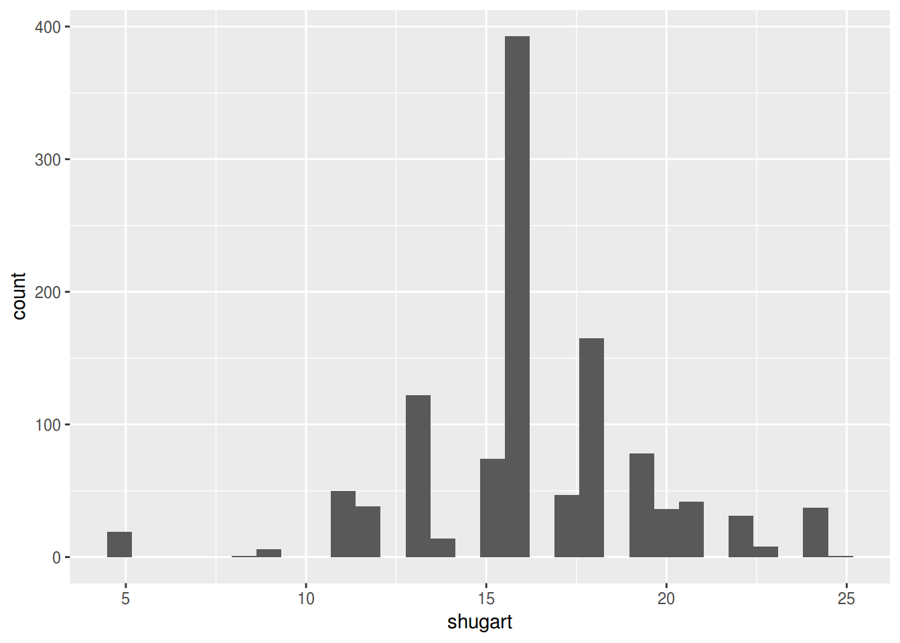
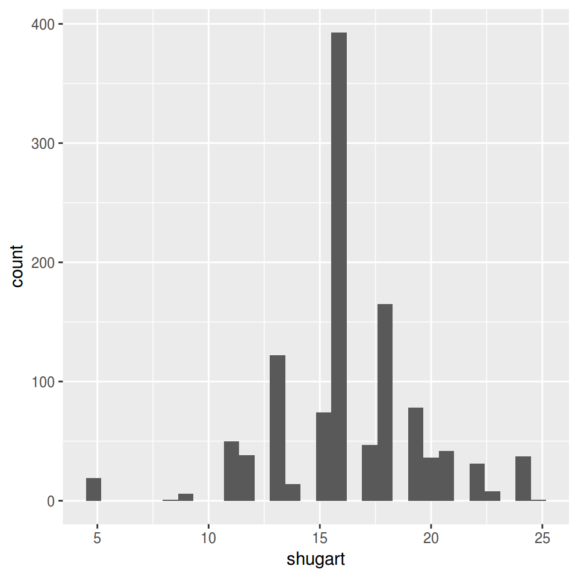
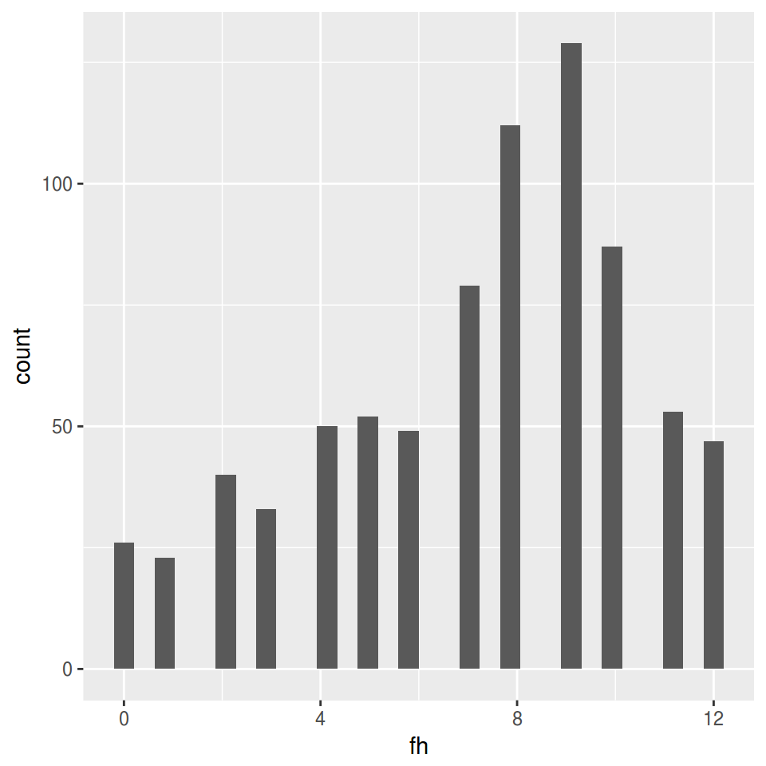
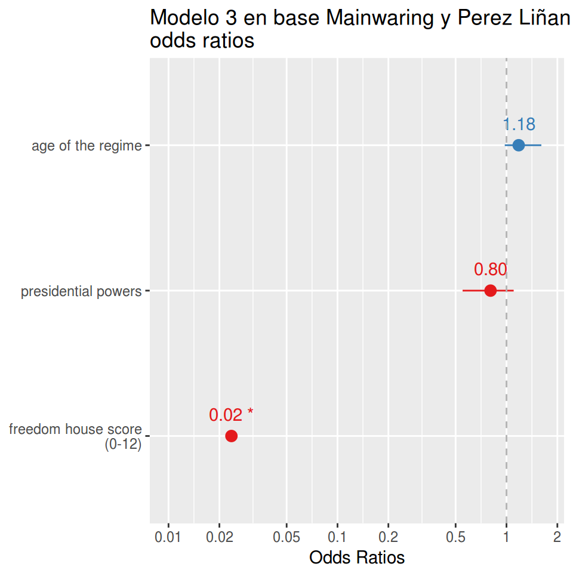
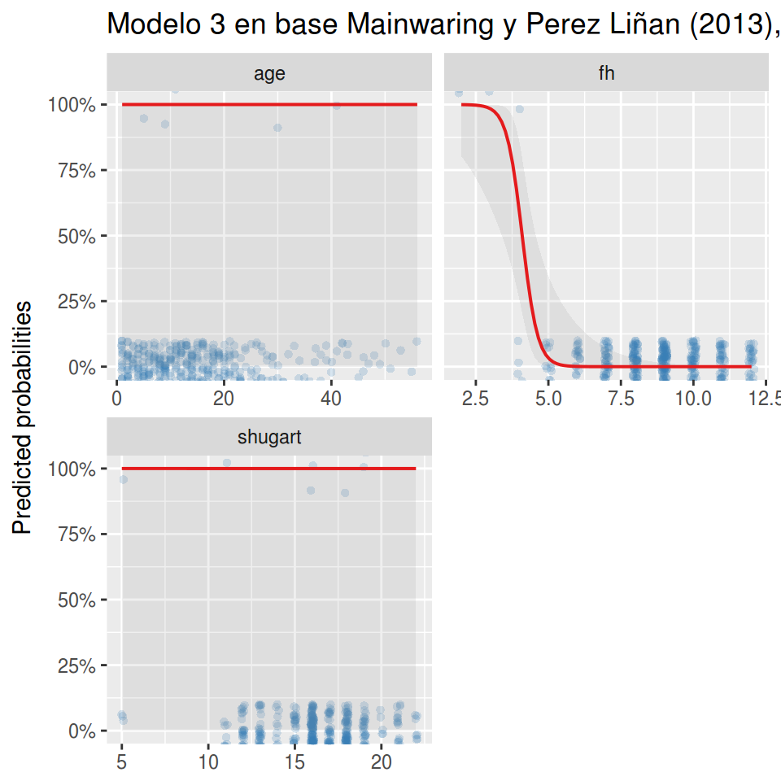
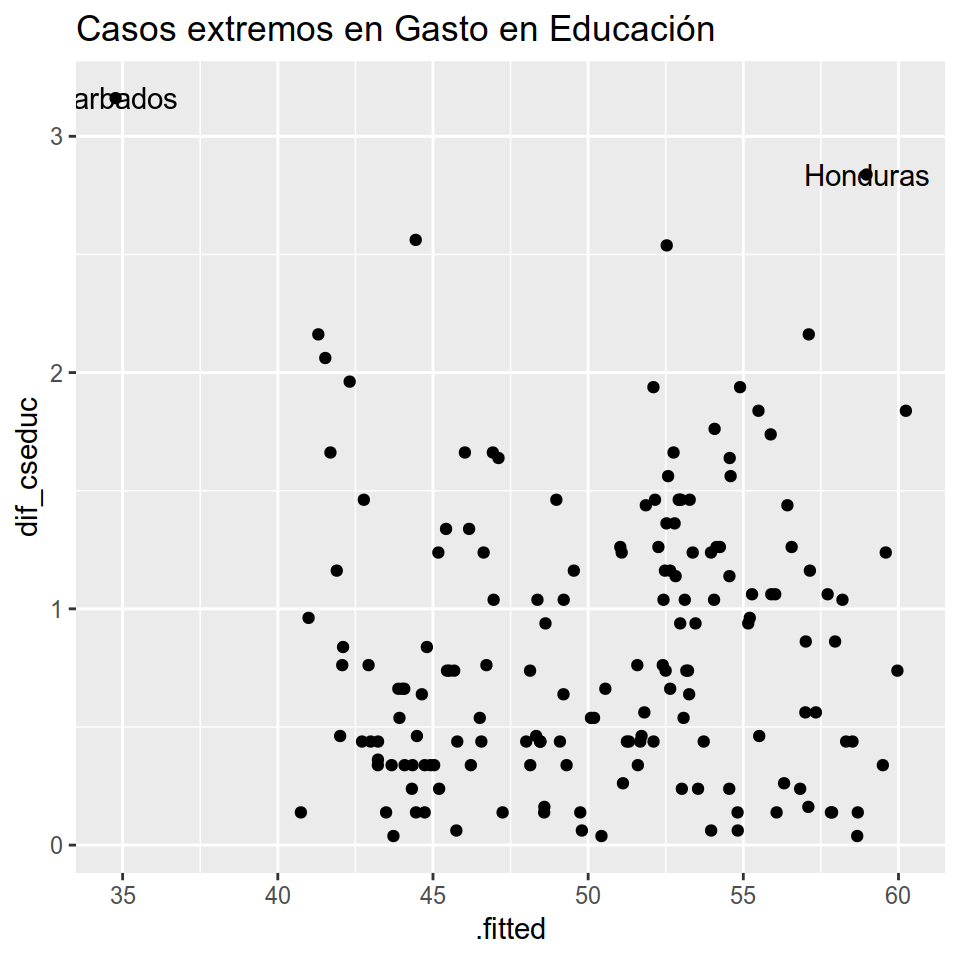
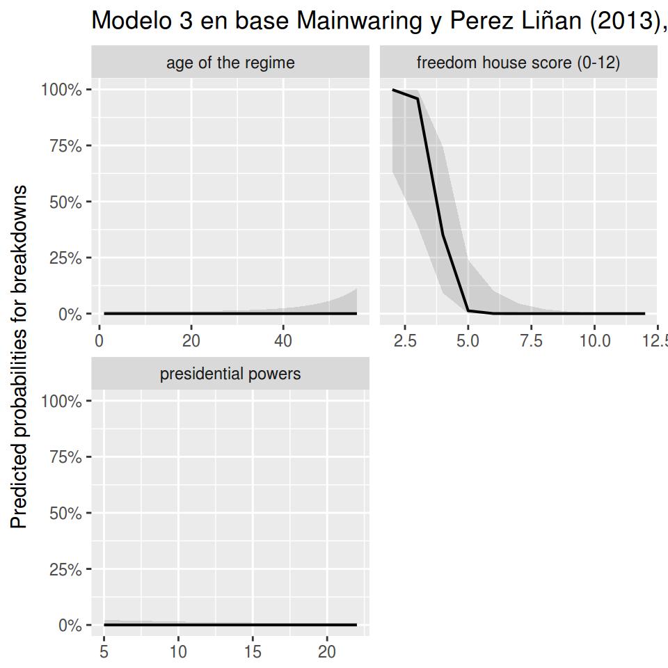
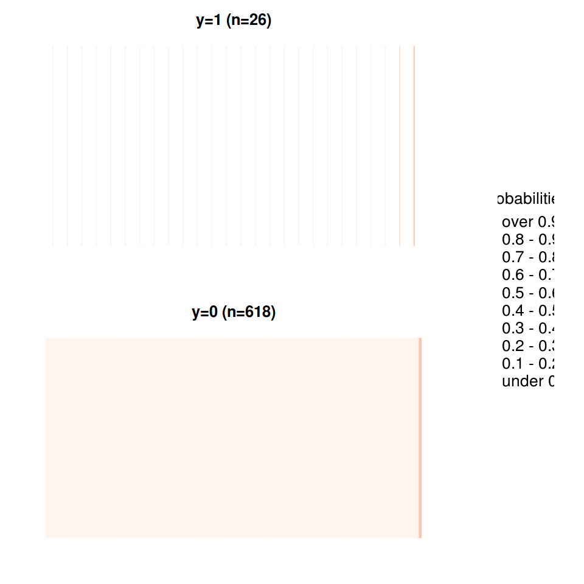
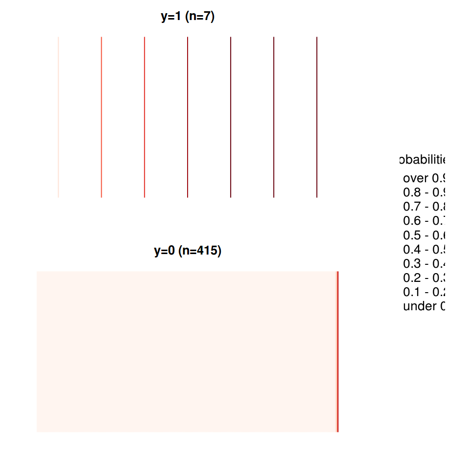
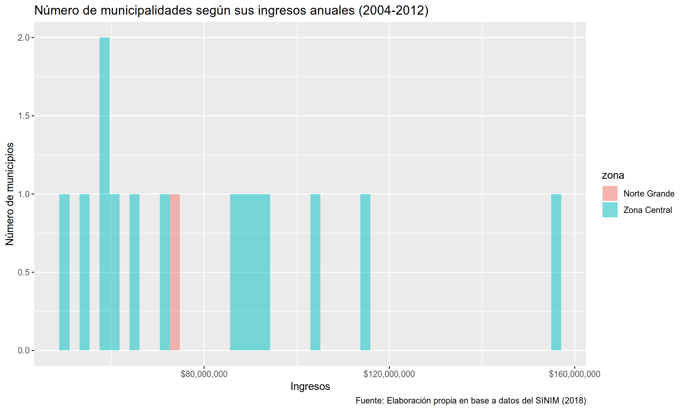

5.2 Primeros pasos
Ahora que entendemos el proceso previo a la construcción del gráfico, tenemos que familiarizarnos con ggplot2. A Layered Grammar of Graphics de Hadley Wickham, explica de forma detallada el funcionamiento de esta nueva “gramática” para hacer gráficos. Si dominas inglés, te recomiendo que leas de primera fuente cómo se pensó este paquete y cómo entender el uso de las capas en la construcción de los gráficos.
A pesar de que el uso de ggplot2 se expandió rápidamente, dentro de la comunidad de R hay constantes discusiones sobre la enseñanza de ggplot2 como primera opción, por sobre los gráficos de R base. Por ejemplo, David Robinson en su blog tiene diferentes entradas sobre este tema, donde él expone de forma contundente las ventajas de ggplot2 por sobre las otras opciones. Si recién estás empezando a familiarizarte con R, empezar con ggplo2 te brindará herramientas muy poderosas y la curva de aprendizaje no es tan elevada como lo requeriría R base.
Algunas de las ventajas que menciona David Robinson en “Why I use ggplot2” son:
- ¡Leyendas! R base requiere de más conocimientos de los usuarios para poder hacer leyendas en los gráficos. Nuestro amigo
ggplot2las hace automáticamente. - ¡Faceting! Suena extrañísimo, pero no encontré una traducción que le hiciera justicia. Básicamente, podemos crear subgráficos con terceras o cuartas variables que nos permita entender mejor el comportamiento de nuestros datos.
- Trabaja en conjunto con el
tidyverse. Eso quiere decir que podemos hacer más por menos. Al final del capítulo entenderán a lo que me refiero. Hay atajos para todo. - Estéticamente, es mejor. Ni hablar de las miles de opciones de paletas cromáticas, temas, fuentes, etc. Si no te gusta, existe una forma de cambiarlo.
Teniendo esto en consideración, comencemos con lo práctico.
5.2.1 Las capas del multiverso ggplotidiano
Pero, entremos al tema que nos interesa: ¿Cómo funciona ggplot2? Este paquete viene incluido en el tidyverse, por lo que no es necesario cargarlo de forma separada. Además, usaremos las herramientas de ambos paquetes durante todo el capítulo. Cargamos el paquete:
La intuición detrás deggplot2 es muy simple. La construcción de los datos se hace en base a capas que contienen cierto tipo de información.
5.2.1.1 Datos
La primera capa son los datos que utilizaremos. Para hacer esto un poco más demostrativo, cargaremos los datos que usaremos a través de todo el capítulo.
Estos datos corresponden a información sobre las municipalidades chilenas. Algunos son del Servicio Electoral y otros del Sistema Nacional de Información Municipal de Chile. En la primera, encontramos los resultados de las elecciones locales, regionales y nacionales del país; y en la segunda, encontramos características económicas, sociales y demográficas de los municipios chilenos. En este caso, contamos con los datos electorales comunales desde 1992 al 2012, y datos descriptivos como la población, los ingresos totales de la municipalidad, el gasto en asistencia social y el porcentaje de personas en situación de pobreza según el total comunal de la Encuesta de Caracterización Socioeconómica Nacional, CASEN.
str(datos_municipales)
## Classes 'tbl_df', 'tbl' and 'data.frame': 1742 obs. of 6 variables:
## $ year : Factor w/ 6 levels "1992","1996",..: 1 1 1 1 1 1 1 1 1 1 ...
## $ zona : Factor w/ 5 levels "Norte Chico",..: 2 3 3 3 3 3 3 3 3 3 ...
## $ comuna : chr "Iquique" "Dalcahue" "Fresia" "Futaleufu" ...
## $ genero : Factor w/ 2 levels "0","1": 1 1 1 1 1 1 1 1 1 1 ...
## $ ingresos: int NA NA NA NA NA NA NA NA NA NA ...
## $ casen : num NA NA NA NA NA NA NA NA NA NA ...Al mirar la base, encontramos que hay datos continuos (numéricos) y categóricos (factores). Saber qué tipo de variable manejamos es base para el siguiente paso.
5.2.1.2 Estética
La segunda capa corresponde al mapeo de las variables dentro del espacio. En este paso, utilizamos mapping = aes(), el cual contendrá la variable que tendremos en nuestro eje x y nuestro eje y. Para aes() hay muchas más opciones que iremos viendo dentro del capítulo, algunas de ellas son fill, color, shape, y alpha. Todas estas opciones son un conjunto de signos que nos permitirán traducir de mejor manera lo que queremos decir a través de nuestro gráfico. Normalmente, a estas opciones se le llaman aesthetics o aes().

El resultado muestra un cuadro vacío. Eso es porque no lo hemos dicho qué objeto geométrico es el que usaremos.
5.2.1.3 Objeto geométrico
Suena extraño, pero cuando hablamos de objeto geométrico o geom, estamos hablando del tipo de gráfico que queremos hacer, si un gráfico de línea, uno de barra, un histograma o un gráfico de densidad, o de puntos, o si queremos hacer un boxplot. Esta es la tercera capa. En este caso, como tenemos los datos de la encuesta CASEN, haremos un boxplot para ver cómo se distribuyen los municipios de nuestra muestra.

Lo primero que notamos es la ausencia de datos para tres periodos. Lamentablemente, en el SINIM no hay datos anteriores al 2002, por eso no hay registros para esos años. Por ese motivo, parece una buena idea filtrar y dejar solo los años que tengan datos sobre la encuesta CASEN. Además de eso, nuestro gráfico no nos dice mucho sobre el porcentaje de pobreza y su distribución. Considerando la geografía chilena, sería una buena idea que vieramos la distribución por zona.
5.2.1.4 Faceting
Ahora ocuparemos nuestras habilidades para hacer dos cosas: primero, ocuparemos filter para dejar sólo los años que nos interesan. Segundo, dividiremos los resultados por zona usando facet_wrap, la que corresponde a la cuarta capa que podemos usar para armar un gráfico con ggplot. No siempre es necesaria, pero siempre es útil mostrar lo que puede lograr. Cuando utilizamos esta capa, lo que buscamos es organizar las geometrías que estamos utilizando a través de una variable categórica. En este caso, zona. Pero el faceting como acción es mucho más que esto. facet_wrap y facet_grid pueden tomar una serie de argumentos, donde el primero es el más importante. La sintaxis que usamos en este caso es la usada para fórmulas en R, y denotamos el primer argumento con el signo “~”. Con nrow y ncol podemos especificar cómo queremos ordenar nuestro gráfico.
Finalmente, agregamos dos líneas de código, una para filtrar y otra para subdividir nuestra información. Esto es lo que logramos:
ggplot(data = datos_municipales %>% filter(year == c(2004, 2008, 2012)),
mapping = aes(x = year, y = casen)) +
geom_boxplot() +
facet_wrap(~ zona, nrow = 1)
Tanto con facet_wrap como con facet_grid podemos usar más de un argumento, pero los resultados son distintos. facet_grid no sólo ordena las geometrías, sino que es capaz de cruzarlas creando gráficos con dos o más dimensiones utilizando variables categóricas. Observen el siguiente ejemplo:
facet_wrap
ggplot(data = datos_municipales %>% filter(year == c(2004, 2008, 2012)),
mapping = aes(x = year, y = casen)) +
geom_boxplot() +
facet_wrap(zona ~ genero)
facet_grid
ggplot(data = datos_municipales %>% filter(year == c(2004, 2008, 2012)),
mapping = aes(x = year, y = casen)) +
geom_boxplot() +
facet_grid(zona ~ genero)
Este gráfico nos muestra que, por zona, el porcentaje de pobreza ha variado considerablemente desde el 2004 al 2012 y que, hay una alta variabilidad intraregional. Además, nos muestra cómo ggplot entrega resultados de calidad sin mayores complejidades. La función facet_wrap es una capa opcional dentro de las múltiples capas de “A Layered Grammar of Graphics”, pero las otras tres deben estar presentes para cualquier tipo de resultado.
5.2.1.5 Transformaciones
Otra capa que puedes utilizar es una capa que te permitirá hacer transformaciones de escala en tus variables. Normalmente aparecerá con el nombre scale_x_discrete, la cual va variando dependiendo de la estética que estemos utilizando dentro de nuestro mapeo. Así, podremos encontrarnos con scale_fill_continuos o scale_y_log10. Por ejemplo, podemos ver cómo se distribuye el ingreso de las municipalidades según el porcentaje de pobreza de nuestra muestra. Normalmente esto lo haríamos de la siguiente manera:
ggplot(data = datos_municipales %>% filter(year == c(2004, 2008, 2012)),
mapping = aes(x = casen, y = ingresos)) +
geom_point() 
Teóricamente, cuando ocupamos una variable que tiene relación con dinero, le aplicamos una transformación logarítmica. Pero ¿cómo se traduce eso en nuestra imagen?
ggplot(data = datos_municipales %>% filter(year == c(2004, 2008, 2012)),
mapping = aes(x = casen, y = ingresos)) +
geom_point() +
scale_y_log10()
Esto es de lo que hablamos cuando hablamos de escalas.
5.2.1.6 Sistema de coordenadas
Normalmente, trabajaremos con un eje x y un eje y. Existen funciones en ggplot2 como coord_flip que nos permitirá cambiar el sentido de nuestro gráfico. Pero también usamos este tipo de capa cuando trabajamos con datos geográficos o cuando, por ejemplo, queremos hacer un gráfico de torta. Aunque, normalmente, no queremos hacer gráficos de torta. Entre más utilices ggplot2, más aprenderás de cada una de las opciones.
5.2.1.7 Temas
Cuando mapeamos los datos, usamos opciones estéticas. Cuando queremos cambiar cómo luce el gráfico, cambiamos el tema. Esto se puede hacer a través de theme, el cual te permite modificar cuestiones que no se relacionan con el contenido del grafico. Por ejemplo, los colores del fondo o el tipo de letras de los ejes. También puedes cambiar dónde se ubicará la leyenda o la ubicación del título. También, puedes cambiar el título, el nombre de los ejes, agregar anotaciones, etc. Solo necesitas conocer labs, annotate y ggtitle.
Ahora, a aplicar todo lo que al parecer entendemos.
##3. Elecciones locales y visualización de datos
Como habíamos mencionado, lo principal es entender que la visualización nos sirve para explorar nuestros datos y contestar preguntas sustantivas de nuestra investigación. Muchas veces las medias, desviaciones estándar u otro tipo de parámetro no nos dice mucho. Esos mismos datos podemos expresarlos a través de la visualización. Por ejemplo, un boxplot puede ser útil para representar la distribución de los datos que tenemos y ver sus posibles outliers, mientras que un gráfico de barras nos ayudará a ver la frecuencia de nuestros datos categóricos, y un gráfico de línea nos sirve para entender cambios en el tiempo. Y esos son sólo algunos ejemplos dentro de una variada gama de posibilidades.
En esta tercera parte, aprenderemos a visualizar diferentes tipos de gráficos con los datos de reelección municipal en Chile. En resumen, en Chile la divisón político-administrativa más pequeña es la comuna o municipio que cada cuatro años escoge a sus autoridades locales: un alcalde y un concejo municipal. Desde 1992 al 2000, los alcaldes fueron electos de forma indirecta, y desde el 2004 en adelante empiezan a ser electos directamente por la ciudadanía.
Ya que conocemos nuestros datos, podemos empezar por lo más simple. Una buena idea, por ejemplo, es ver la cantidad de mujeres electas como alcaldesas versus el número de hombres electos. Para eso, podemos usar un gráfico de barras. Como bien vimos en el ítem anterior, para armar cualquier tipo de gráfico necesitamos conocer la o las variables que queremos usar y cuál geometría o geom nos permite representar lo que queremos conocer. En este caso, usaremos geom_bar para ver cuántos hombres y cuántas mujeres han sido electos desde 1992.
5.2.2 Gráfico de barras

Como vemos, armar un gráfico de barras es muy simple. Podemos ver que, desde 1992, han sido electos más de 1500 hombres como alcaldes, una cifra que supera largamente a las menos 250 mujeres que han sido electas para el mismo cargo en la misma cantidad de tiempo.
Pero, quizás, esto no se mantiene por zona: ¿Qué pasa cuando subdividimos el gráfico para ver qué pasa por zona geográfica?

Uno de los problemas con este gráfico, es que no tiene en consideración el número de comunas por cada zona. Mientras que en el norte de Chile hay, en general, pocas comunas, en la zona central podemos encontrar que sólo la Región Metropolitana cuenta con más de 52. Sin considerar las otras cinco regiones que componen la zona. Quizás, sería más prudente si vemos la proporción de mujeres y hombres electos por zona.

Las geometrías geom_bar o geom_col, geom_density y geom_histogram no suelen llevar el eje y explicitado en las estéticas, ya que son un conteo sobre el eje x. Al especificar y = ..prop.. como estética dentro del objeto geométrico, estamos ordenando el cálculo de la proporción, no la cuenta. Normalmente, usaremos aes() en conjunto con los datos en ggplot(), pero dependiendo de la preferencia que tengas, es posible usarlo también con los geom. Esto último es más común cuando ocupamos más de una base de datos o cuando queremos hacer algún tipo de transformación.
A pesar de lograr la transformación, como apreciamos en las etiquetas del eje y, no conseguimos lo que queríamos. No es un error de nosotros, sino que es una característica de la función geom_bar. Cuando hacemos un gráfico de barras, la función cuenta la frecuencia de cada característica en la base de datos. Así, por ejemplo, en el Norte Chico han sido electos 101 hombres desde 1992 versus 20 mujeres. En el Norte Grande, han sido electos 89 hombres versus 13 mujeres, y así. Pero cuando calculamos la proporción, la función no la calcula en base a la suma de ambos por zona, sino en base a sí misma. Suena complejo, pero no lo es. En este caso, ve que hay 89 hombres electos en el Norte Grande y la función dice “en el Norte Grande los 89 hombres corresponden al 100% de hombres, y las 13 mujeres corresponden al 100% de mujeres”, cuando lo que queremos saber qué porcentaje del total de alcaldes son hombres y qué porcentaje son mujeres.
Para eso utilizamos group = 1.

¡Ahora sí lo logramos! Vemos que no hay grandes diferencias, siendo el “Norte Chico” el que cuenta con más mujeres en la alcaldía en relación a los hombres. A pesar de esto, no hay grandes diferencias de zona a zona y parece que se replicaran los resultados que vimos en nuestro primer gráfico de barras. Ahora, podríamos arreglar temas estéticos del gráfico. Por ejemplo, ponerle título, la fuente de los datos y especificar qué es 0 y qué es 1.
plot_a +
geom_bar(mapping = aes(y = ..prop.., group = 1)) +
facet_wrap(~zona, nrow = 1) +
labs(title = "Proporción de mujeres y hombres electos alcaldes (1992-2012)\nPor zonas económicas de Chile",
x = "Género", y = "Proporción",
caption = "Fuente: base de elaboración propia con datos del SERVEL y SINIM (2018)") 
Ahora, sólo nos falta agregar las etiquetas del eje x. Eso lo podemos hacer fácilemente con scale_x_discrete. Tienes que tener en consideración qué estética de aes() modificarás, ya que eso cambiará el scale que necesites. Si estuviéramos viendo las etiquetas de fill, tendríamos que usar scale_fill_discrete, por ejemplo. También tienes que tener en consideración qué tipo de variable estás usando. Que scale_x_dicrete tenga “discrete” al final no es una decisión aleatoria. Como comprenderás, depende totalmente del tipo de variable que estemos manejando.
plot_a +
geom_bar(mapping = aes(y = ..prop.., group = 1)) +
facet_wrap(~zona, nrow = 1) +
scale_x_discrete(labels = c("Hombres", "Mujeres")) +
labs(title = "Proporción de mujeres y hombres electos alcaldes (1992-2012)\nPor zonas económicas de Chile",
x = "Género", y = "Proporción",
caption = "Fuente: base de elaboración propia con datos del SERVEL y SINIM (2018)") 
Con labels podemos cambiar las etiquetas. Ten en consideración el número de breaks de tu variable categórica para que calcen a la perfección y no te sobre (o te falte) alguna categoría.
Ejercicio:
geom_barsuele ser un poco inflexible. Puedes obtener los mismos resultados y con mayor plasticidad utilizandogeom_col.- Sería interesante cambiar el color de las barras para que éstas expresen la categoría género. Una opción es hacerlo a través de la estética
fillal mapear los datos enaes(). - Para ver los cambios anuales de estas cifras, cambia “zona” por “year”
facet_wrap¿qué tendencia ves?
plot_a +
geom_bar(mapping = aes(y = ..prop.., group = 1)) +
facet_wrap(~year, nrow = 1) +
scale_x_discrete(labels = c("Hombres", "Mujeres")) +
labs(title = "Proporción de mujeres y hombres electos alcaldes (1992-2012)\nPor zonas económicas de Chile",
x = "Género", y = "Proporción",
caption = "Fuente: base de elaboración propia con datos del SERVEL y SINIM (2018)")
###Gráfico de Línea
En el gráfico final de la sección anterior, vimos que si bien la elección de mujeres alcaldesas en Chile ha aumentado, este no parece ser significativo: en el 2012, sólo un 13% de los alcaldes electos eran mujeres. Quizás esto puede deberse a que los cambios socioeconómicos no han repercutido en la percepción sobre los roles de género en la sociedad. Tal vez, mirar los datos económicos de ingresos municipales o de porcentaje de pobreza según la CASEN nos ayuden a entender por qué no ha aumentado sustantivamente la elección de mujeres en las elecciones municipales. Para esto podemos usar geom_line, el objeto geométrico que nos permitirá ver la evolución en el tiempo de nuestro objeto de estudio. La intuición sería hacer la figura de esta manera:
plot_b <- ggplot(data = datos_municipales,
mapping = aes(x = year, y = ingresos))
plot_b +
geom_line()
El problema es que no nos entrega el resultado esperado. La intuición es correcta, pero nosotros tenemos que ayudar a geom_line con ciertas especificaciones. geom_line agrupa las observaciones para crear el gráfico de línea. En este caso, las agrupa por lo que cree tiene más sentido: el año. Por esta razón, tenemos que especificar cuál es la variable que agrupa toda la información y como sabemos, la información que tenemos está agrupada por municipio. Cuando agregamos esta información como geom_lines(aes(group = comuna)), el resultado cambia y se asemeja a lo que buscábamos:

Dos problemas que surgen a simple vista:
- No tenemos datos anteriores al 2004.
- Considerando que son 345 comunas, parece imposible tenerlas todas en un solo gráfico.
Estos dos problemas se pueden solucionar fácilmente. Primero, queremos eliminar los periodos anteriores al 2004. Para hacer esto, tenemos dos posible soluciones:
La primera solución es simplemente hacer un subset de la variable con filter, combinando las herramientas del tidyverse y las de ggplot. En este caso, seleccionamos solo los años que utilizaremos para la construcción del gráfico, dejando afuera 1992, 1996 y 2000. Para seleccionar más de un nivel en una variable, utilizamos %in%. Finalmente, tenemos el resultado deseado:
ggplot(data = datos_municipales %>% filter(year %in% c(2004, 2008, 2012)),
mapping = aes(x = year, y = ingresos)) +
geom_line(aes(group = comuna))
Ahora, podemos separar el gráfico como lo habíamos hecho anteriormente. Se puede hacer por zona o por región, pensando en cuál resultado te interesa más. Ya que hemos visto diferentes resultados por zonas, sería interesante ver el ingreso de la misma manera.

Como son pocos años, no podemos ver mucha variabilidad y a primera vista, parece que los ingresos de todos los municipios han incrementado considerablemente. Quizás, podemos seguir mejorando nuestro gráfico. Probablemente, no estés muy familiarizado con la notación científica y te sientes más cómodo leyendo números más grandes. Quizás sabes que es mejor trabajar todo tipo de variable monetaria con su transformación logarítmica, como nos han enseñado en diferentes cursos de métodologías. Puede, también, que quieras agregar otro tipo de información a este gráfico, como por ejemplo, las medias.
¿Qué te parece el siguiente gráfico?
medias <- datos_municipales %>%
group_by(zona) %>%
summarise(mean = mean(ingresos, na.rm = T))
plot_b +
geom_line(color = "gray70", aes(group = comuna)) +
geom_hline(aes(yintercept = mean), data = medias, color = "dodgerblue3") +
scale_x_discrete(expand = c(0,0)) +
scale_y_log10(labels = scales::dollar) +
facet_wrap(~ zona, nrow = 1) +
labs(title = "Ingresos municipales en años electorales (2004-2012)",
y = "Ingresos",
x = "Años") +
theme(panel.spacing = unit(2, "lines"))
¿Qué especificamos?
- Primero, creamos una base de datos (“medias”) que contiene los promedios de ingresos por cada zona. Esto lo hicimos utilizando
group_byysummarisedeltidyverse.
datos_municipales %>%
group_by(zona) %>%
summarise(mean = mean(ingresos, na.rm = T))
## # A tibble: 5 x 2
## zona mean
## <fct> <dbl>
## 1 Norte Chico 4816249.
## 2 Norte Grande 7167984.
## 3 Zona Austral 2609648.
## 4 Zona Central 7302625.
## 5 Zona Sur 3219110.Especificamos el color de
geom_line.Agregamos a nuestro código
geom_hline. Este objeto geométrico, comogeom_vlineogeom_abline, nos sirven para agregar líneas con información. En este caso, lo usé para agregar el promedio de ingresos de cada zona. Especificamos la variable que contiene los promediosyintercept = mean, de la basemedias, y además, especificamos el color concolor = "dodgerblue3".Usamos
scale_x_discretepara especificar la expansión de los paneles. Si antes se veía un espacio gris sin información, lo sacaremos. Esto es estético.Utilizamos
scale_y_log10para escalar nuestros datos. Como los presentábamos, no lográbamos ver más allá de aquellos municipios con un altísimo ingreso, mientras que las demás comunas quedaban apiladas en el fondo del panel. Esta es una transformación logarítmica que normalmente se hace cuando trabajamos modelos lineales que contienen datos monetarios. Además, cambiamos las etiquetas del eje y: ya no aparece la notación científica. Esto se hace con un paquete llamadoscales. Aquí llamamos directamente la función conscales::dollar.Agregamos el título y los nombres del eje x y eje y con
labs.Especificamos información del tema. Sin él, los años entre un panel y otro chocarían. Para eso, especificamos con
panel.spacing = unit(2, "lines")en la capatheme.
Ejercicio:
- Para entender cómo funciona cada una de las especificaciones, puedes ir borrando y agregando por separado cada uno de estos detalles. Algunos tienen más sentido que otros, ¿qué modificarías?
5.2.3 Boxplot
Ya vimos que los ingresos de los municipios crecieron entre el 2004 y el 2012. Cuando observamos el gráfico sin la transformación funcional, notamos que habían algunas comunas que tenían ingresos muy por sobre el resto y sobresalían dentro de sus zonas. La intuición nos dice que posiblemente sean outliers. Podríamos ver esto más claramente con un boxplot, el cual nos sirve para graficar diferentes datos descriptivos de nuestras variables como son la mediana, el mínimo y el máximo. En este caso, lo utilizaremos para ver si nuestra intuición era acertada o no.
Filtramos los datos como lo hicimos con el gráfico anterior. En nuestro eje x pondremos las zonas de Chile y en el eje y los ingresos. Además, ocuparemos otro tipo de estética: color, la cual usaremos para identificar de mejor manera cada zona. Propiedades estéticas como fill, color, size, cambian al ser utilizadas con variables discretas o continuas.
Este es el resultado que trabajaremos:
plot_c <- ggplot(data = datos_municipales %>%
filter(year %in% c(2004, 2008, 2012)),
mapping = aes(x = zona, y = ingresos, color = zona)) +
geom_boxplot() +
facet_wrap(~year, ncol = 1)
plot_c
Uno de los problemas que podríamos tener con este gráfico, es que no nos permite observar bien los outliers, ya que la expansión del eje y es muy pequeña. Para solucionar esto podemos usar coord_flip, una función que nos permite dar vuelta los ejes de nuestro gráfico:

Ahora ya podemos observar mejor algunos de los outliers presentes. Quizás, después de ver estos resultados, nos gustaría identificar qué comunas son las que reciben más ingresos totales. Para eso podemos usar otra estética, label dentro de geom_text. Para nombrar sólo los outliers, tenemos que hacer un subset de los datos.
plot_c +
coord_flip() +
geom_text(data = datos_municipales %>% filter(ingresos > 50000000),
mapping = aes(label = comuna))
Lamentablemente, las etiquetas están por encima de los puntos y, en algunos casos, se pierden cuando estos están muy juntos. Una de las soluciones es con el paquete ggrepel que tiene el elemento geométrico geom_text “mejorado” para que las etiquetas no choquen entre sí. También, cambiaremos el color de las letras para que sea posible leerlas sin mayor dificultad. Como ven, este color va afuera de la estética de geom_text_repel, ya que definimos el color para todo el objeto. Cuando va dentro de aes(), el color se modifica según la candidad de, por ejemplo, ingresos o por el tipo de, por ejemplo, zona.
library(ggrepel)
plot_c +
coord_flip() +
geom_text_repel(data = datos_municipales %>%
filter(ingresos > 50000000),
mapping = aes(label = comuna), color = "black")
El corte puede ser en los $50.000.000 o en números más grandes o más pequeños. Depende completamente de lo que queremos observar. Además, con geom_text o geom_text_repel no solo puedes modificar el color, sino también el el tipo de fuente de la letra, o si debe estar en negrita, cursiva o subrayada. Para ver más opciones, debes ingresar ?geom_text o llamar a help("geom_text").
También podríamos agregar otro tipo de información o cambiar cómo está presentado lo que ya tenemos.
plot_c +
coord_flip() +
geom_text_repel(data = datos_municipales %>%
filter(ingresos > 50000000),
mapping = aes(label = comuna),
color = "black",
size = 3) +
scale_y_continuous(labels = scales::dollar) +
labs(title = "Ingresos de las municipalidades según zona (2004-2012)",
x = "Ingresos", y = "Zona",
caption = "Fuente: Elaboración propia en base a datos del SINIM (2018)") +
guides(color = F)
Otras especificaciones:
Agregamos los nombres para los ejes y para el gráfico, además de la fuente de los datos.
Cambiamos el tamaño de la letra. Esto era importante por la cantidad de comunas que están por sobre los $50.000.000 en ingresos.
Nuevamente, cambiamos las etiquetas del eje y con
scales::dollar.Por último, con
guidesy especificando elaes()que buscamos afectar, escribimos el códigocolor = Fpara eliminar la leyenda, ya que era información que se repetía dentro del gráfico que realizamos.
Te invito a jugar con geom_text: cambia los colores, el tamaño, la fuente, etc. También, te insto a instalar paquetes que te permitirán personalizar aun más tus gráficos: ggthemes de jrnorl tiene temas para gráficos de programas y revistas conocidas como Excel o The Economist. Por otro lado, hrbrthemes de hrbrmstr ha elaborado algunos temas minimalistas y elegantes que harán que todos los gráficos que hagas luzcan mejor. Si tienes algo por los colores, puedes mirar el paquete wespalette de karthik una paleta cromática basada en las películas de Wes Anderson o crear tus propias paletas según imágenes con colorfindr. Puedes averiguar más sobre este último en el siguiente vínculo.
###Histograma
Según lo que pudimos observar en nuestro boxplot, muchas comunas –especialmente de la zona central–, están muy por encima de los ingresos medianos por zona. Podríamos ver la distribución de estos datos a través de un histograma. Hacer un histograma es muy fácil, y como lo había mencionado anteriormente, geom_histogram no lleva el eje y de forma explícita ya que cuenta la frecuencia de un evento dentro de cierto intervalo.
Cuando creamos el histograma según nuestra intuición, este es el resultado:
ggplot(data = datos_municipales,
mapping = aes(x = ingresos)) +
geom_histogram()
## `stat_bin()` using `bins = 30`. Pick better value with `binwidth`.
## Warning: Removed 738 rows containing non-finite values (stat_bin).
Como podemos observar, el gráfico nos tira un “Warning” que nos indica que hay “738 filas que contienen valores no-finitos”. Esta advertencia se ha repetido constantemente durante el capítulo, y no quiere decir nada más que “Hay valores 0 o desconocidos dentro de esta variable” y, como sabemos, los primeros periodos no cuentan con información. Así que tranquilo, si filtráramos los datos con filter(!is.na(ingresos)) lo más seguro es que la advertencia desaparecería.
También, la consola nos dice este mensaje: stat_bin() using bins = 30. Pick better value with binwidth. Simplemente, nos dice que es posible modificar el número de intervalos.
Lo siguiente que haré será modificar el eje x. Nunca se me ha dado bien leer los números con la notación científica. Por otro lado, probaremos cambiando el número de intervalos con bins.
ggplot(data = datos_municipales,
mapping = aes(x = ingresos)) +
geom_histogram(bins = 50) +
scale_x_continuous(labels = scales::dollar)
## Warning: Removed 738 rows containing non-finite values (stat_bin).
¿Qué pasa cuando ponemos bins = 15 intervalos?
Lo que haremos a continuación es hacer un subset de los datos. Teniendo en consideración el número de outliers que nos encontramos, eliminaremos los municipios que tienen ingresos mayores a los $50.000.000. También podemos ver la frecuencia por zona. Al igual que cuando ocupamos color con geom_boxplot, ocuparemos fill con geom_histogram.
ggplot(data = datos_municipales %>% filter(ingresos > 50000000),
mapping = aes(x = ingresos, fill = zona)) +
geom_histogram(alpha = 0.5, bins = 50) +
scale_x_continuous(labels = scales::dollar) +
labs(title = "Número de municipalidades según sus ingresos anuales (2004-2012)",
x = "Ingresos", y = "Número de municipios",
caption = "Fuente: Elaboración propia en base a datos del SINIM (2018)")
Ejercicio:
- La construcción de un gráfico de densidad es muy similar a la de un histograma, solo debes usar
geom_density. Teniendo los datos y la intuición, no debería ser complejo llegar a estos mismos resultados. Consejo: no solo usesfillpara cambiar los colores, tambien usacolor.
5.2.4 Relación entre variables
Probablemente una de tus mayores preocupaciones es si las dos variables que estás estudiando se relacionan de algún modo. Con ggplot esto es muy simple de comprobar. En este caso, tenemos dos variables continuas: el porcentaje de pobreza de la CASEN y los ingresos municipales. Según la teoría, debería existir un tipo de relación: a mayor ingreso municipal, menor debería ser el porcentaje de pobreza en la comuna. Creamos nuestros datos:
Para este tipo de gráfico, utilizamos geom_smooth. Con este objeto, puedes modificar la forma en que se relacionan las variables a través de method. Incluso puedes poner tu propia fórmula. Por defecto, viene especificada una relación lineal entre las variables, así que no es necesario escribirlo.

Se ve un poco vacío, ¿no? Normalmente, ocuparemos geom_smooth con otra figura geométrica geom_point, para indicar la posición de las comunas dentro del espacio. Ocuparemos alpha para que veamos la sobreposición de los puntos. Sin ser muchos, no hay problemas en ver cómo se distribuyen.

Ahora podríamos hacer dos especificaciones. Primero, pondremos el título y el nombre de los ejes. Segundo, en geom_x_continuous especificaremos donde tiene que empezar y terminar nuestro gráfico. Esto ya lo habíamos usado con geom_line.
plot_f +
geom_point(alpha = 0.3) +
geom_smooth(method = "lm", color = "dodgerblue3") +
scale_x_continuous(expand = c(0,0)) +
labs(title = "Relación entre ingresos y porcentaje de pobreza CASEN, Chile (2004-2012)",
x = "Porcentaje de Pobreza CASEN", y = "Ingresos",
caption = "Fuente: Elaboración propia en base a datos del SINIM (2018)") 
Claramente, hay una correlación negativa entre ambas variables. Era lo que esperábamos. Ahora, podemos calcular la correlación entre ambas para estar más seguros de los resultados obtenidos:
cor(datos_municipales$casen, datos_municipales$ingresos,
use = "pairwise.complete.obs")
## [1] -0.27La correlación entre ambas variables es de -0.27. Sería interesante agregar esta información al gráfico. Esto lo podemos realizar con annotate. Sólo tenemos que especificar el tipo de objeto geométrico que queremos generar. En este caso, lo que queremos crear es texto text, pero podría ser un cuadro resaltando un punto específico en el gráfico rect o una línea segment. Especificamos donde lo ubicaremos y, finalmente, anotamos lo que queremos anotar.
plot_f +
geom_point(alpha = 0.3) +
geom_smooth(method = "lm", color = "dodgerblue3") +
scale_x_continuous(expand = c(0,0)) +
labs(title = "Relación entre ingresos y porcentaje de pobreza CASEN, Chile (2004-2012)",
x = "Porcentaje de Pobreza CASEN", y = "Ingresos",
caption = "Fuente: Elaboración propia en base a datos del SINIM (2018)") +
annotate("text", x = 50, y = 15, label = "Correlación:\n-0.27")